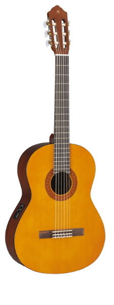
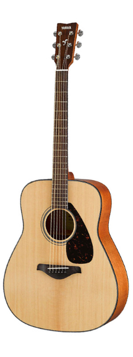
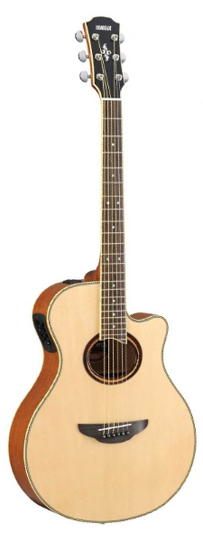
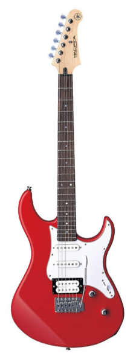
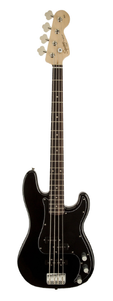

| Type | Number of Strings | Description | Image |
|---|---|---|---|
| Classical | 6 | Made with nylon strings. Produces mellower sounds |  |
| Acoustic | 6 | Similar to Classical but made with steel strings |  |
| Electric-Acoustic | 6 | Similar to Acoustic but made with option to plug into amp |  |
| Electric | 6 | Sound is made by converting vibrations of strings to electric signals |  |
| Bass | 4 | Produces lower tone |  |